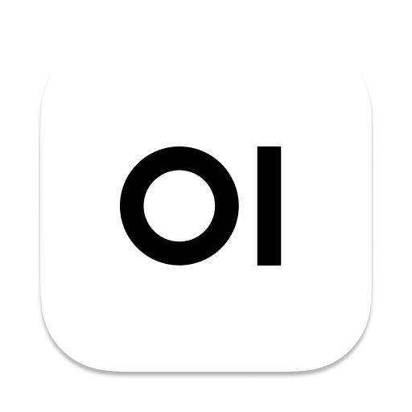

Bitte wählen, ob Sie Open WebUI oder n8n öffnen möchten.

Chat, RAG und vertrauliche Dokumentanalyse.
Automationen, Integrationen und Webhooks (Admin).
Nur für Mitarbeitende: Sicherer Zugang zur Analyse vertraulicher Dokumente im jeweiligen Organisationsbereich.